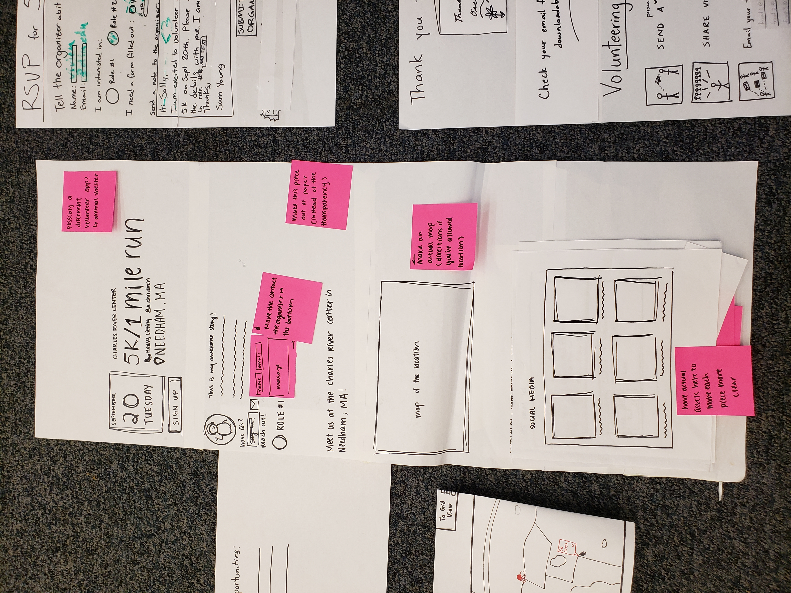
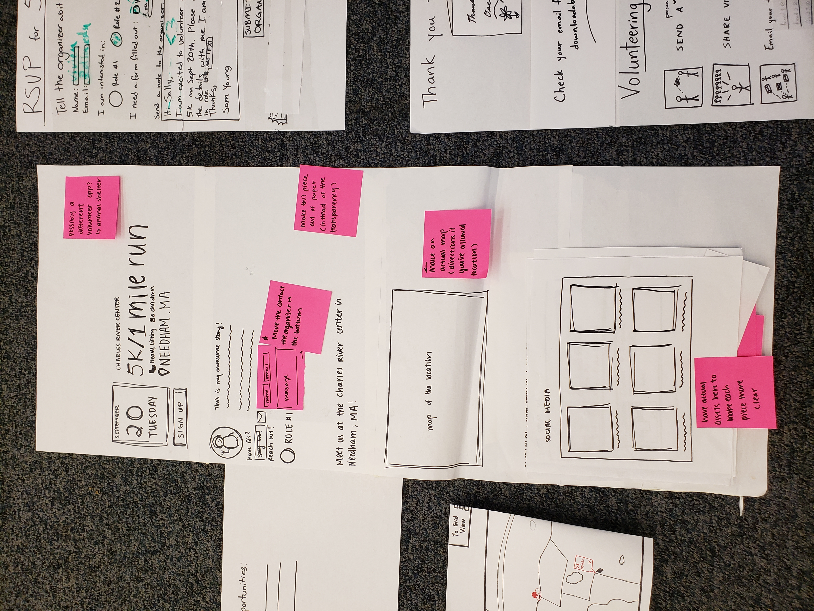

Design Development
Making, responding, and iterating

Starting the phase we had a solid basis of information of our users. Now we used that information to create paper prototypes to suss out any flaws, misread needs, or omissions in our understanding before you move on to digital prototyping in the next phase!
First we created a first pass draft of a paper prototype, incorportating what we learned from our users.


 


After user test though we were altered to several problems with our design, namely in terms of confusing terminology or unclear UI, although the underlying structure made sense. We compiled these errors in a page by page break down. After following up with this we made small changes to make the workflow of the prototype easier to understand, giving us our second draft:


At this point we feel we have a more solid grasp of how to translate user needs and wants into interactive design elements that fufill those needs but not making it feel overdone.